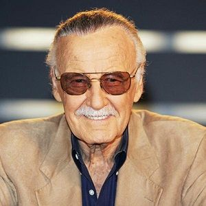

Stan Lee
Stan Lee was an American comic-book writer, editor, and publisher, who was formerly executive vice president and publisher of Marvel Comics.
Stan was born in New York City, to Celia (Solomon) and Jack Lieber, a dress cutter. His parents were Romanian Jewish immigrants. Lee co-created Spider-Man, the Hulk, Doctor Strange, the Fantastic Four, Iron Man, Daredevil, Thor, the X-Men, and many other fictional characters, introducing a thoroughly shared universe into superhero comic books. In addition, he challenged the comics' industry's censorship organization, the Comics Code Authority, indirectly leading to it updating its policies. Lee subsequently led the expansion of Marvel Comics from a small division of a publishing house to a large multimedia corporation.
He has had cameo appearances in many Marvel film and television projects. A few of these appearances are self-aware and sometimes reference Lee's involvement in the creation of certain characters.
On 16 July 2017, Lee was named a Disney Legend, a hall of fame program that recognizes individuals who have made an extraordinary and integral contribution to The Walt Disney Company.
Stan was married to Joan Lee for almost 70 years, until her death. The couple had two children.
Trivia
He is credited as creating the Marvel Comics characters in the 1960s which introduced more complex characterizations for super-heroes. He also is credited for popularizing continuity to give the various series a sense of narrative flow and an interrelated common world for the characters. However, since the "plot first" writing method he used meant that the artists he collaborated with, especially Jack Kirby and Steve Ditko, served as essentially co-writers, the matter who truly deserves the credit for the creations from such collaborations is a matter of vigorous debate.
Apart from his participation in the creation of the classic Marvel Comics characters, he also helped weaken censorship in the mainstream comics field. This happened when, after a formal request by the United States Department of Health, Education and Welfare, he decided to do a story about the problem of drug abuse. The story he wrote in 1971 for "The Amazing Spider-Man" concerned Peter Parker's friend Harry Osborne having a bad trip on LSD and nearly dying from it. The Comics Code Authority declared that they would not give their seal of approval to the three-issue arc on the grounds that the code, which was notorious for being draconian, would not allow the depiction of drug use even when it is portrayed negatively. Confident that the original government request would give him credibility and with the support of his publisher, Martin Goodman, Lee decided to defy the CCA and published the story as is without the seal and received healthy sales and a positive public reaction for his efforts in portraying the social problem. Soon after, the CCA changed their rules to allow for anti-drug messages in comics.Disliked the 1970s live-action Spider-Man television series (for which he was a script consultant), deeming it "too juvenile". He also felt that Spider-Man was being treated on the show as a "cardboard character".His three most famous comic book creations are: Fantastic Four (Debut November 1961), the Incredible Hulk (Debut May 1962) and the Amazing Spider-Man (Debut August 1962 in 'Amazing Fantasy' # 15).